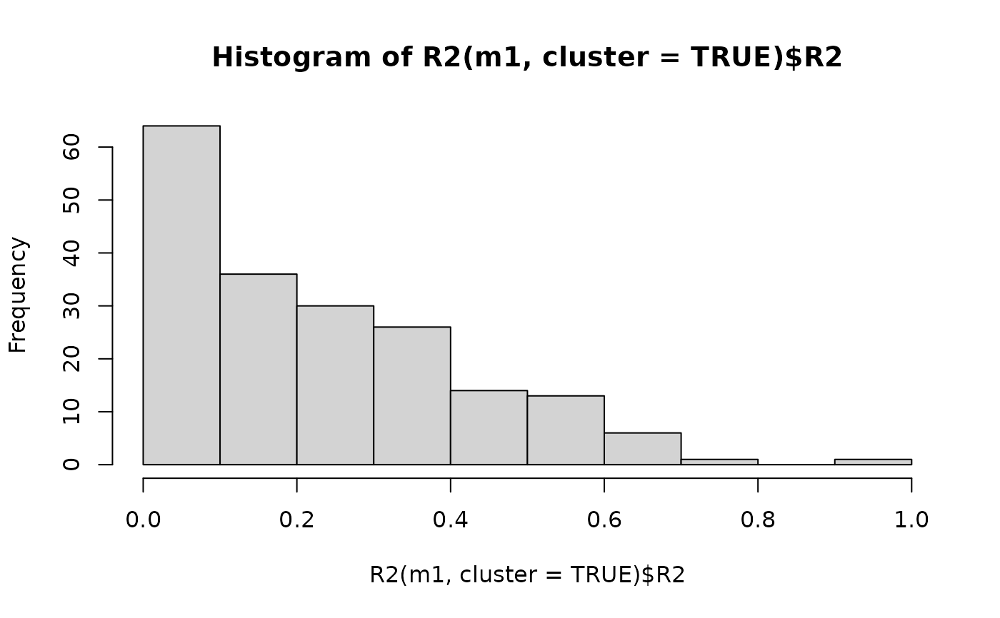

For pseudo R2 by cluster, the squared correlation between observed and predicted values for each cluster unit is returned. For the overall model, the marginal and conditional R2 are calculated as described in the references.
Usage
# S3 method for class 'merMod'
R2(object, cluster = FALSE, ...)Value
a named vector with the marginal and conditional R2 values,
if CLUSTER = FALSE, otherwise, a data table with the pseudo R2
for each cluster unit.
References
For estimating the marginal and conditional R-squared values, see: Nakagawa, S. and Schielzeth, H. (2013) <doi:10.1111/j.2041-210x.2012.00261.x> "A general and simple method for obtaining R2 from generalized linear mixed-effects models" and also: Johnson, P. C. (2014) <doi:10.1111/2041-210X.12225> "Extension of Nakagawa & Schielzeth's R2GLMM to random slopes models"
Examples
library(JWileymisc)
data(aces_daily, package = "JWileymisc")
m1 <- lme4::lmer(PosAff ~ STRESS + (1 + STRESS | UserID),
data = aces_daily)
R2(m1)
#> MarginalR2 ConditionalR2
#> 0.1480118 0.6381639
R2(m1, cluster = TRUE)
#> ID IDVariable R2
#> <int> <char> <num>
#> 1: 1 UserID 0.0008365004
#> 2: 2 UserID 0.4615574606
#> 3: 3 UserID 0.0125102870
#> 4: 4 UserID 0.1506410069
#> 5: 5 UserID 0.0133703907
#> ---
#> 187: 187 UserID 0.0017950558
#> 188: 188 UserID 0.3319884249
#> 189: 189 UserID 0.0800763116
#> 190: 190 UserID 0.3956990376
#> 191: 191 UserID 0.0226941915
hist(R2(m1, cluster = TRUE)$R2)

rm(m1)